HIST 101 · U.S. History to 1877
The Compromise of 1850
and Uncle Tom’s Cabin
After Manifest Destiny · Chapter 13
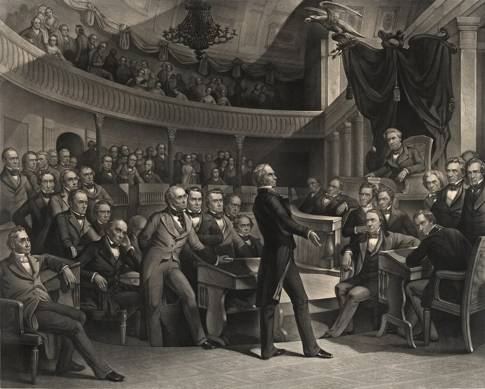
After the War You Already Know
The Treaty of Guadalupe Hidalgo (1848) transferred about 525,000 square miles; the United States paid Mexico $15 million.
- California, Nevada, Utah
- Most of Arizona; western New Mexico
- Parts of Colorado and Wyoming
The question: Would slavery be allowed in these lands?
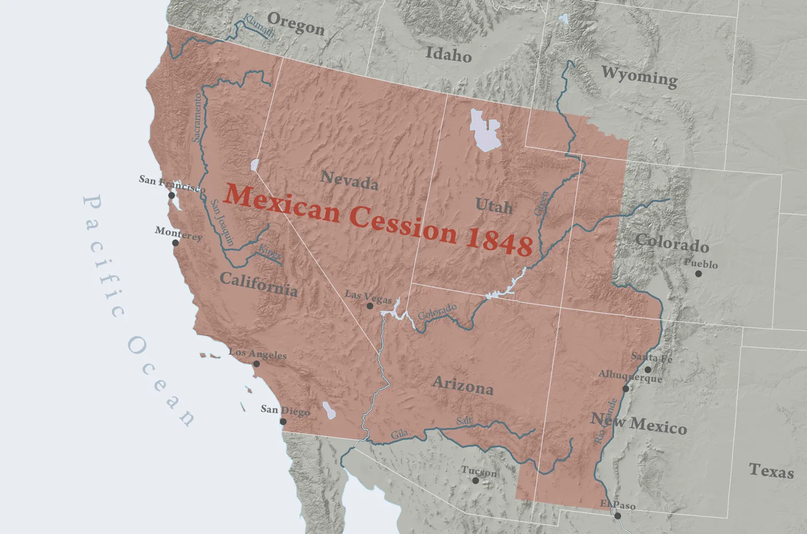
The Wilmot Proviso (1846)
David Wilmot proposed banning slavery in any territory acquired from Mexico.
- Passed the House in 1846 and 1847
- Never passed the Senate (no vote in 1846; stripped in 1847)
- Never became law
It failed as a statute. It succeeded as a political catalyst that forced parties to take sides and crystallized free-soil politics.
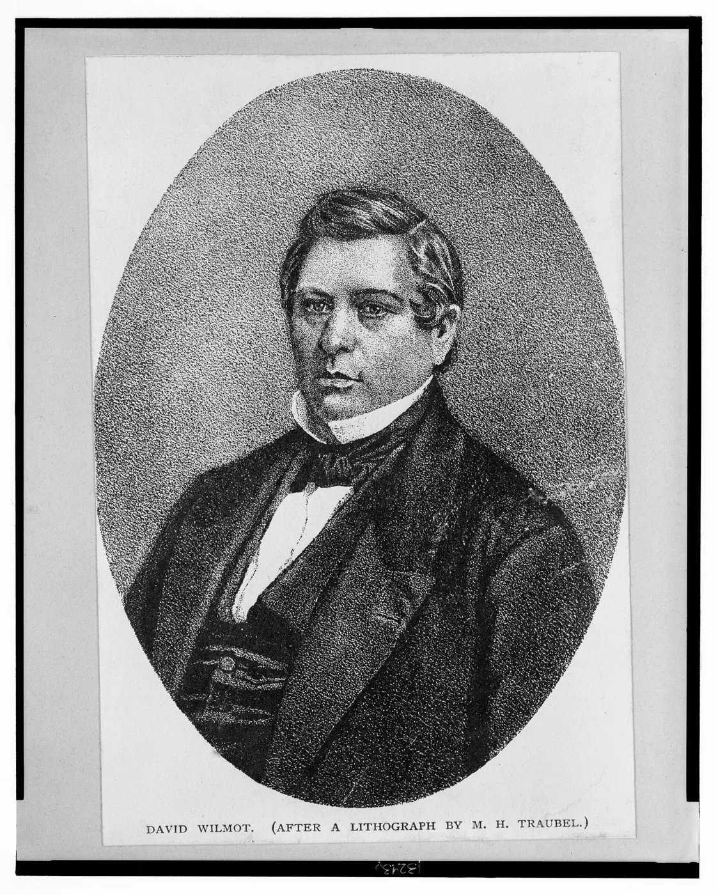
The California Gold Rush
- January 1848: gold found at Sutter’s Mill
- By the end of 1849, about 100,000 newcomers had arrived
- Fall 1849: Californians wrote a constitution that banned slavery
- They skipped the territorial stage and asked to join as a state
- Almost overnight, California had become a would-be free state
Extra credit: A Gold Rush documentary is available on Canvas for extra credit.
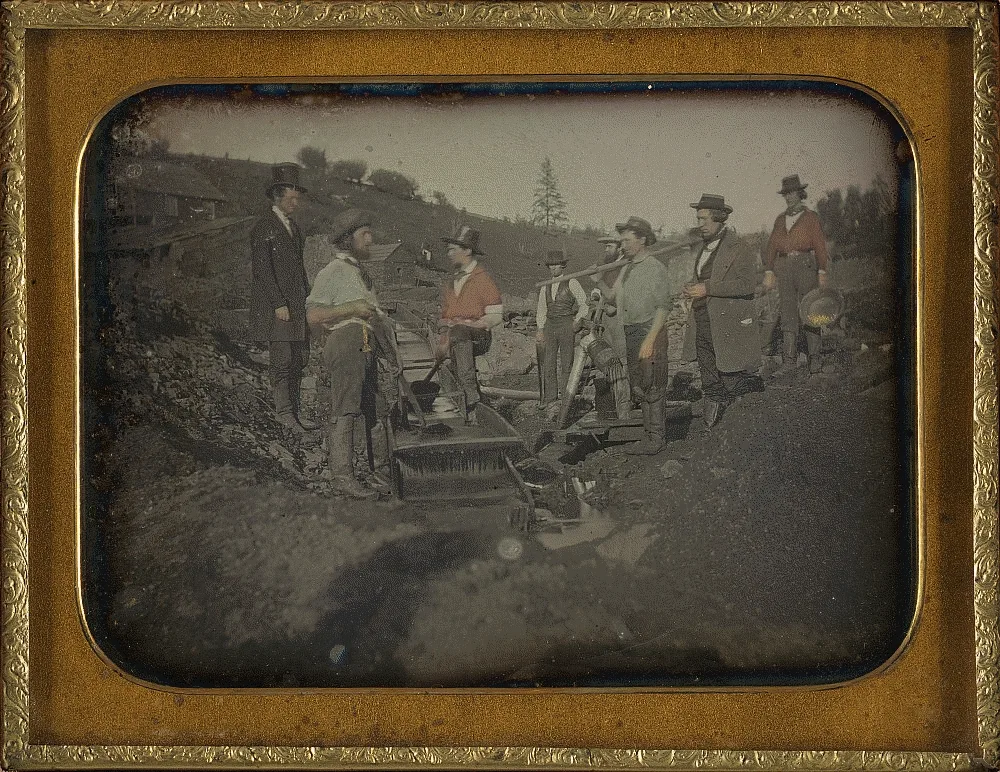
Five Issues: California, Texas, Territories, D.C., Fugitives
By 1850, five disputes over slavery threatened to split the Union:
- California — free-state constitution, Senate balance (15 free, 15 slave)
- Texas — boundary claims + public debt
- New Mexico & Utah — organizing the rest of the Cession
- District of Columbia — slave trade in the capital
- Fugitive slaves — the 1793 law was weakened by Prigg v. Pennsylvania (1842) and Northern personal-liberty laws
Zachary Taylor’s Stand
- A slaveholder: Louisiana planter and Mexican War hero, elected in 1848 as a Whig
- Refused to bargain: he would not bundle the five issues into one compromise
- Wanted California, and later New Mexico, admitted directly as states
- When Texas threatened to seize Santa Fe, he reinforced the army there
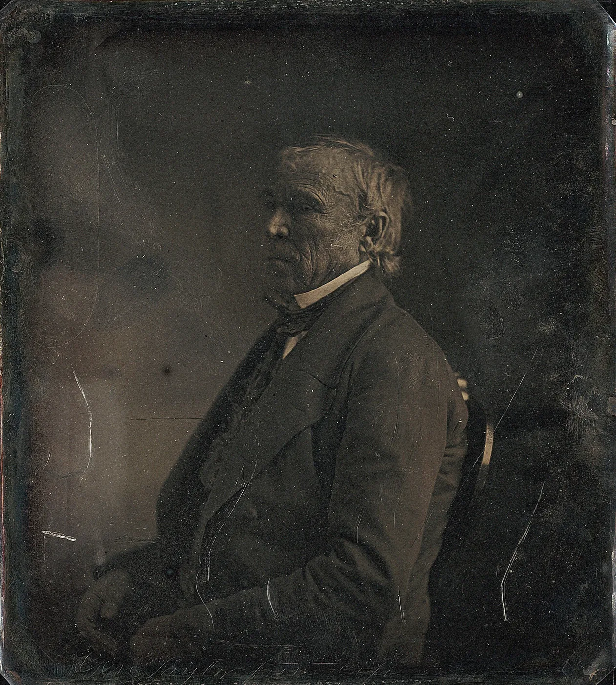
The Great Triumvirate’s Last Debate
- Henry Clay (KY) — Jan 29 resolutions; Feb 5–6 speech for compromise
- John C. Calhoun (SC) — March 4 (read by James Mason): rejected it
- Daniel Webster (MA) — March 7: “I speak to-day for the preservation of the Union”
“I wish to speak to-day, not as a Massachusetts man, nor as a Northern man, but as an American…”Daniel Webster, U.S. Senate, March 7, 1850


The Nashville Convention (1850)
- June 3, 1850: delegates from nine slave states met in Nashville to weigh secession
- Moderates prevailed: extend the 36°30′ line to the Pacific
- A smaller November session declared a right to secede
- The threat gave Congress a deadline

Taylor’s Death
- July 4: Taylor attended a hot ceremony at the Washington Monument
- He fell ill with a stomach illness and died on July 9, 1850
- Vice President Millard Fillmore of New York became president
- Fillmore backed compromise, and the deadlock broke

Stephen Douglas Breaks the Package
- May 8: a Senate committee bundled Clay’s plan into one “omnibus” bill
- July 31: amendments stripped it apart, and the omnibus died
Clay’s single omnibus bill failed. Douglas separated it into five bills and built different majorities for each.
Five statutes signed between September 9 and September 20, 1850. Fillmore signed them after Taylor’s death.

What Congress Actually Passed
- California admitted as a free state
- New Mexico & Utah organized with no ban on slavery (popular sovereignty)
- Texas boundary settled; $10 million for its debt
- Slave trade (not slavery) abolished in DC
- New Fugitive Slave Act of 1850
The Provision That Backfired
- Federal commissioners, not state courts
- No jury trial; alleged fugitive could not testify
- Citizens could be compelled to help; $1,000 fine and six months in jail for aiding a fugitive
- Commissioner paid $10 to send a person south, $5 to free them
Northern personal-liberty laws multiplied. Resistance radicalized moderates: Shadrach Minkins rescued (Boston, 1851); Anthony Burns returned under federal guard (1854).
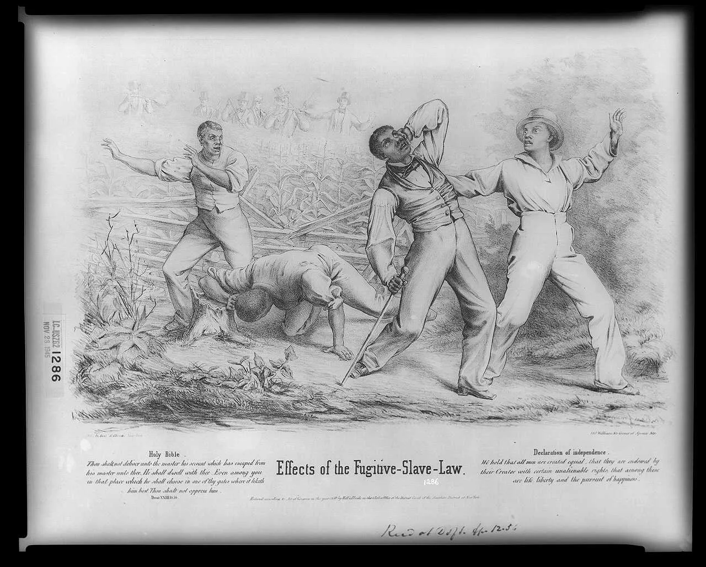
Rank & Defend
Which pressure most endangered the Union by 1850? Rank them and defend your bottom choice.
- California applying as a free state
- Southern demand for a stronger fugitive-slave law
- The memory of the Wilmot Proviso debates
Black Northerners Respond
- The law threatened every free Black person: without a jury, anyone could be claimed as a runaway
- Vigilance committees in Boston, Philadelphia, and other cities warned and hid people
- Thousands fled to Canada in the months after the law passed
- In Canada West, Mary Ann Shadd urged emigration and founded a newspaper

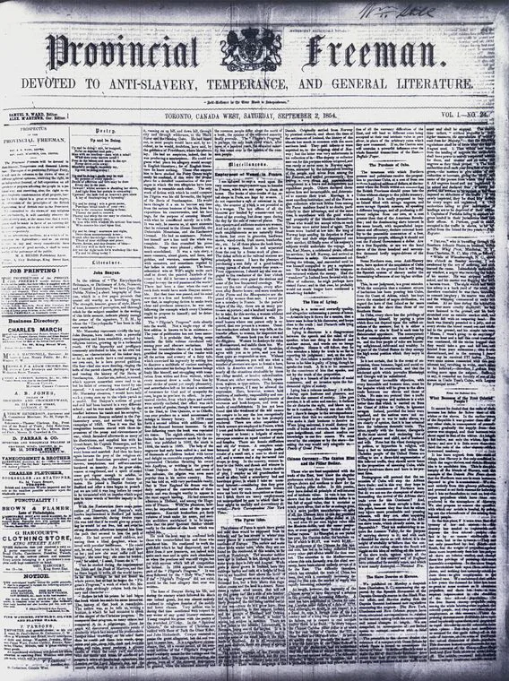
The Shadrach Minkins Rescue (1851)
- Minkins escaped slavery in Norfolk, Virginia, in 1850
- Feb 15, 1851: arrested at his waiter’s job and held in the federal courthouse
- Lewis Hayden and a crowd of Black Bostonians carried him out of the courtroom
- He reached Montreal; Boston juries would not convict the rescuers
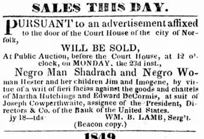
Christiana, Pennsylvania (1851)
- Sept 11, 1851: Edward Gorsuch came for men who had fled his Maryland farm
- At William Parker’s house, armed Black farmers answered a horn and fought the posse
- Gorsuch was killed; Parker escaped to Canada with Frederick Douglass’s help
- 38 men were charged with treason; the first trial ended in acquittal

The Jerry Rescue (1851)
- Oct 1, 1851: William “Jerry” Henry, a barrel maker, was arrested
- Abolitionists in town for a convention rang church bells
- A Syracuse crowd broke into the police office and freed him
- Days later he was smuggled to Kingston, Canada West

Frederick Douglass Responds
- Escaped slavery in 1838; by 1851 he edited his own paper in Rochester
- Hid fugitives, including the Christiana men, on their way to Canada
- July 5, 1852: “What to the Slave Is the Fourth of July?” said the law had nationalized slavery
“By an act of the American Congress, not yet two years old, slavery has been nationalized in its most horrible and revolting form.”Frederick Douglass, Rochester, July 5, 1852

Take a Role
You are a moderate Northern Whig in 1851. A federal commissioner has ordered the return of a fugitive living in your town.
What do you do, and what principle do you invoke?
Harriet Beecher Stowe
- Born in 1811 into a famous family of preachers
- 1832–1850: lived in Cincinnati and watched slavery across the Ohio River in Kentucky
- 1849: her baby son Charley died of cholera
- 1850: moved to Maine just as the Fugitive Slave Act passed
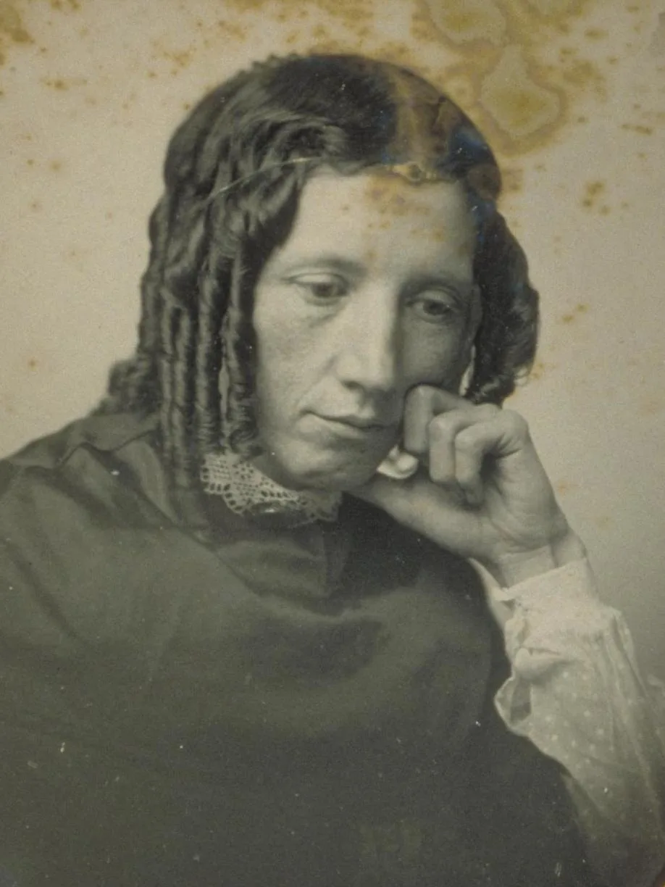
One Year Later: A Novel
Harriet Beecher Stowe wrote in response to the Fugitive Slave Act.
Uncle Tom’s Cabin was serialized in the National Era (June 1851–April 1852), then appeared as a book on March 20, 1852.
Roughly 300,000 U.S. copies in the first year; about 1.5 million in Britain.

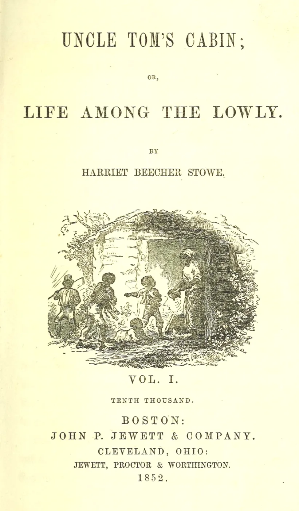
Stowe’s Sources
She built her story from real testimony:
- Weld and the Grimké sisters, American Slavery As It Is (1839)
- Josiah Henson’s life story (1849)
- Ohio River stories, like a mother who crossed the ice with her child
- 1853: A Key to Uncle Tom’s Cabin documented her sources

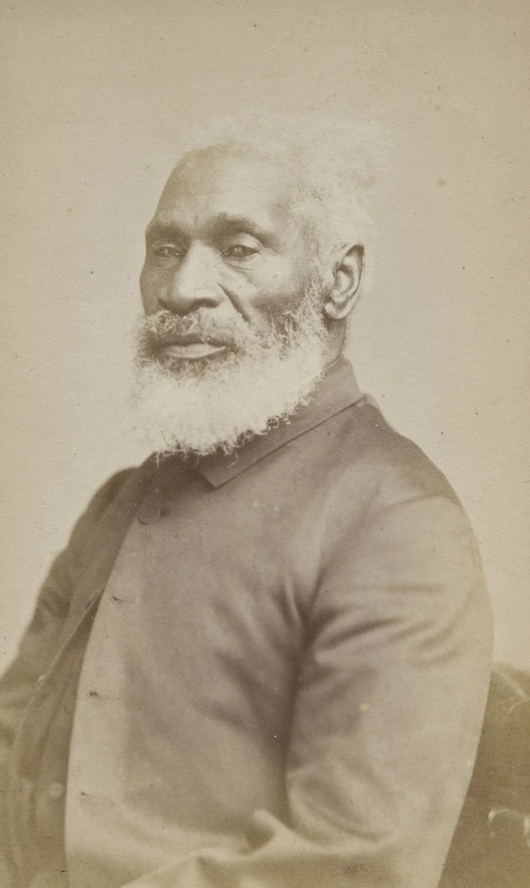
The Story, Part 1: Eliza and Tom
- A Kentucky farmer in debt sold Tom and little Harry to a slave trader
- Harry’s mother, Eliza, ran with him across the icy Ohio River
- Tom stayed, was sold south, and saved young Eva St. Clare from drowning
- Eliza’s husband, George Harris, escaped to join her on the way to Canada

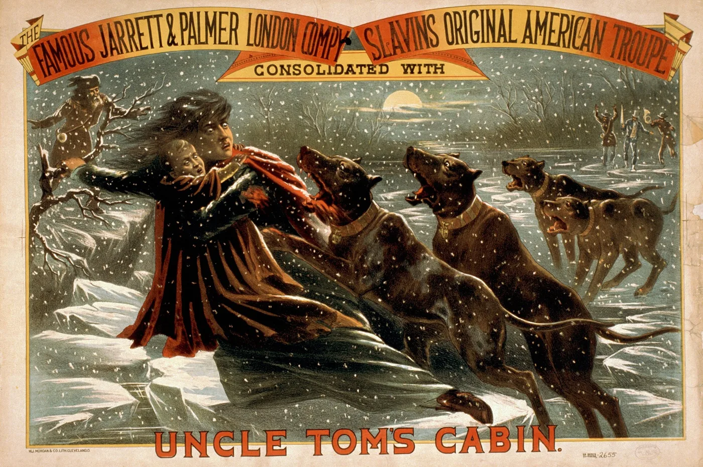
The Story, Part 2: Legree’s Plantation
- In New Orleans, Eva and her father died; Tom was sold at auction
- Simon Legree took him to a Red River cotton plantation
- Tom refused to reveal where Cassy and Emmeline were hiding
- Legree had him beaten to death; Tom forgave his killers
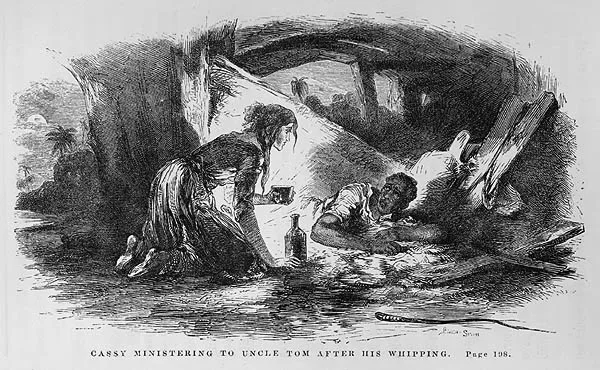
Why the Book Mattered
- Made the human cost of slavery emotionally concrete
- Converted many moderate Northerners
- Suppressed across the South; inspired “Anti-Tom” novels
- Stage versions circulated for decades
The famous Lincoln greeting is unverified; it first appeared in print in 1896. The perception that the novel shifted opinion was widespread.

The Southern Response
- White Southern reviewers called it a slander: false, ignorant, and dangerous
- 1857: Samuel Green, a free Black Maryland minister, got ten years, partly for owning a copy
- Writers answered with “Anti-Tom” novels like Aunt Phillis’s Cabin (1852)
- Stowe answered them with A Key (1853)
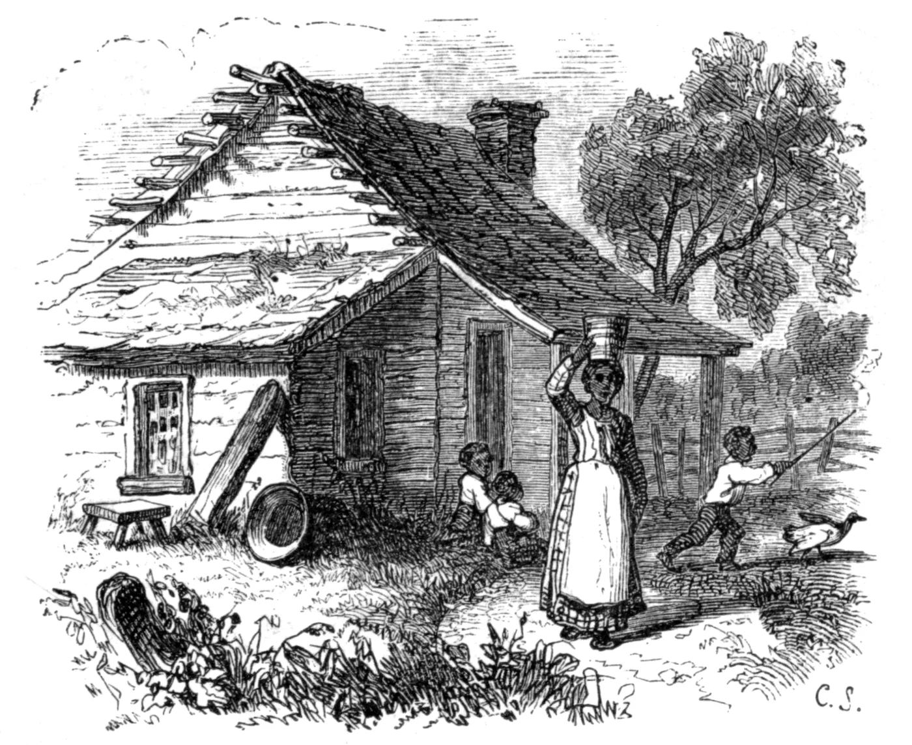
Black Readers Respond
- Frederick Douglass praised the novel and met Stowe in 1853
- At the end, George Harris took his family to Liberia, in Africa
- Martin Delany: “Mrs. Stowe knows nothing about us”
- Many praised the book’s power but saw its ending as saying Black Americans did not belong here

The Novel’s Stereotypes
- Tom was a saint of patient suffering; Topsy was played for laughs
- Stowe described Black people as naturally gentle, childlike, and religious
- Blackface “Tom shows” toured for decades and reshaped the story
- The stereotypes outlived slavery: by the 1900s “Uncle Tom” was an insult; James Baldwin’s critique (1949)

Read It in 1852
Choose one reader and answer as that person:
- A Northern Whig who supported the Compromise of 1850
- A free Black abolitionist in Rochester
- A planter’s wife in Virginia
- A mill worker in Manchester, England
Which scene moves or angers your reader most? What might your reader do after finishing the book?
Vocabulary
- Wilmot Proviso — 1846 proposal to ban slavery in territory from Mexico; never law, but sharpened sectional politics.
- Popular sovereignty — settlers in a territory decide the slavery question themselves.
- Fugitive Slave Act of 1850 — federal law that strengthened recovery of alleged runaways.
- Free-soil — slavery should not expand into new territories.
- Uncle Tom’s Cabin — 1852 novel by Harriet Beecher Stowe.
- Nashville Convention — 1850 meeting of slave states that weighed secession.
- Personal-liberty laws — Northern state laws that limited help with slave-catching.
- Vigilance committee — local group that warned, hid, and moved fugitives.
- Anti-Tom novels — proslavery novels written to answer Stowe.
- Colonization — the idea of sending Black Americans to Africa, as in Liberia.
What the Compromise Bought—and What It Did Not
It postponed secession. It did not settle the conflict the Wilmot Proviso had already made central.
Free states now led 16 to 15.
That gap exploded in Kansas after 1854.
Boston, Christiana, and Syracuse defied it in 1851.
It also spread stereotypes and a colonization ending.
Today’s lecture ends here. Next: the Independent Study section.
Pierian Spring
Independent Study
Deeper context for the online hour
Today’s lecture ends here. Continue on your own: the stories below finish this chapter’s history, and each ends with a review question to answer.
“A little learning is a dang’rous thing;
Drink deep, or taste not the Pierian spring.”Alexander Pope, An Essay on Criticism (1711)
Free soil · Anti-Tom novels · The Lincoln anecdote · Anthony Burns, 1854 · Check Yourself · Sources
Independent Study · Northern politics
Free-Soil Ideology in More Detail
The Wilmot Proviso gave free-soil politics a clear legislative face. Many Northerners who rejected immediate abolition still opposed expansion of slavery into the territories on economic and political grounds.
- 1848: the Free Soil Party formed at Buffalo, New York
- Its slogan: “Free Soil, Free Speech, Free Labor, and Free Men”
- Martin Van Buren won about 10 percent of the popular vote for president
Review question: How could a Northerner oppose the spread of slavery without being an abolitionist?
Independent Study · The book war
Southern Literary Response
Pro-slavery writers produced some 20–30 “Anti-Tom” novels. Stowe answered with A Key to Uncle Tom’s Cabin (1853), a documentary defense.
- Kind masters, contented enslaved people, happy plantation families
- Cruel Northern factories and “wage slaves”
Review question: What did Anti-Tom novels claim about slavery, and how did Stowe answer them?
Independent Study · Weighing the evidence
The Lincoln Anecdote
The story that Lincoln greeted Stowe as “the little woman who made this great war” first appeared in print in 1896, 34 years after their December 1862 meeting, and rests on family tradition. No contemporary record confirms the words.
Treat it as a legend: the meeting probably happened; the line is unconfirmed.
Review question: Why do historians treat Lincoln’s famous line to Stowe as a legend rather than a fact?
Independent Study · Boston, 1854
Anthony Burns (1854)
- May 24, 1854: Burns, who had escaped Virginia, was arrested in Boston
- May 26: a rescue attack on the courthouse failed; a deputy was killed
- June 2: as Boston watched, federal troops marched him to a ship, back to slavery in Virginia
- 1855: Boston supporters bought his freedom
Review question: Why did the return of Anthony Burns turn some conservative Northerners against the Fugitive Slave Act?
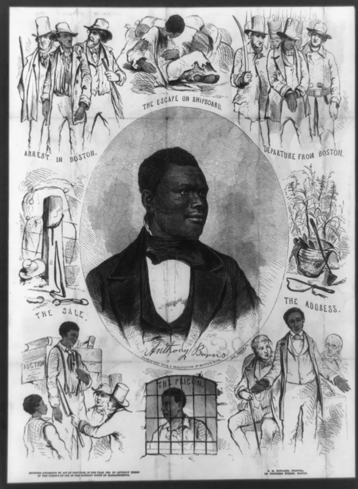
Independent Study · Check Yourself
Check Yourself
Click an answer to see whether it is right, the correct answer, and why.
1. What did most free-soilers want?
2. What did Anti-Tom novels like Aunt Phillis’s Cabin claim?
3. Why is Lincoln’s line to Stowe about “this great war” treated as legend?
4. What happened to Anthony Burns in June 1854?
Sources
Primary sources
- Wilmot Proviso votes: U.S. House of Representatives, History, Art & Archives (history.house.gov).
- Henry Clay, resolutions (Jan. 29, 1850) and speech (Feb. 5–6, 1850); U.S. Senate Historical Office, “Clay’s Last Compromise” (senate.gov).
- John C. Calhoun, speech of March 4, 1850 (read by James M. Mason).
- Daniel Webster, “The Constitution and the Union,” March 7, 1850 (Wikisource; Teaching American History).
- Fugitive Slave Act, Sept. 18, 1850, 9 Stat. 462 (Avalon Project, Yale Law School).
- Frederick Douglass, “What to the Slave Is the Fourth of July?” Rochester, July 5, 1852.
- Martin R. Delany to Frederick Douglass, March 22 and April 18, 1853 (Frederick Douglass Papers Project).
- Harriet Beecher Stowe, Uncle Tom’s Cabin (National Era, 1851–52; Boston: John P. Jewett, 1852); A Key to Uncle Tom’s Cabin (1853).
- Theodore D. Weld et al., American Slavery As It Is (1839); Josiah Henson, The Life of Josiah Henson (1849).
- Annie Fields, “Days with Mrs. Stowe,” Atlantic Monthly, August 1896.
Scholarship and references
- David M. Potter, The Impending Crisis, 1848–1861 (1976).
- Fergus M. Bordewich, America’s Great Debate (2012).
- Stanley W. Campbell, The Slave Catchers (1970).
- Gary Collison, Shadrach Minkins (1997); Thomas P. Slaughter, Bloody Dawn: The Christiana Riot (1991).
- Albert J. von Frank, The Trials of Anthony Burns (1998).
- Joan D. Hedrick, Harriet Beecher Stowe: A Life (1994).
- Daniel R. Vollaro, “Lincoln, Stowe, and the ‘Little Woman/Great War’ Story,” Journal of the Abraham Lincoln Association 30, no. 1 (2009).
- Stephen Railton, ed., Uncle Tom’s Cabin & American Culture (University of Virginia).
- James Baldwin, “Everybody’s Protest Novel” (1949).
Images
- All images are period works in the public domain (Library of Congress, Yale Beinecke, The Met, Art Institute of Chicago, Nelson-Atkins, NYPL, Harvard Schlesinger, Internet Archive) via Wikimedia Commons, except the Mexican Cession map (Kballen, CC BY 3.0) and the Jerry Rescue Monument photo (CC0). Each slide’s caption gives its source.